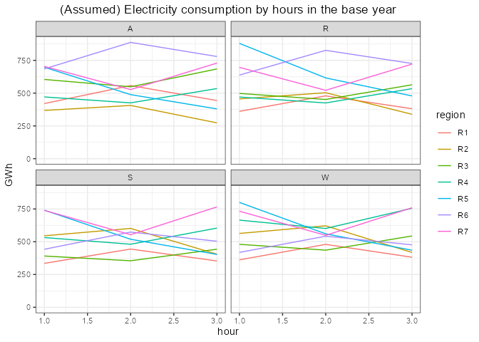
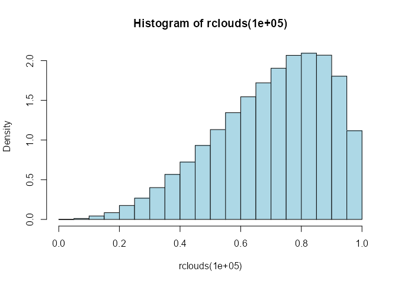

Utopia: the testing model
(transitional/interim version)
2024-08-29
Source:vignettes/utopia.Rmd
utopia.RmdIntoduction
[The example model in the repository is fully functional, the
text and parts of code might be obsolete - the update is in
progress]
This tutorial demonstrates the application of energyRt
package to develop a Reference Energy System (RES, or
Energy system optimization) model and conduct standard
analysis, i.e. run scenarios, optimize several alternative development
pathways of the simplified energy system. The initial (base-year)
structure of the discussed below example of RES is flexible. The
following features can be easily adjusted:
* number of regions and the model GIS-info (the map),
* the model horizon and annual time-steps (“milestone years”),
* number and levels of sub-annual time-steps (“time slices”),
* technological options, commodities, storage, supply, and demand,
* interregional trade and trade with the rest of the world (ROW),
* constraints on the model variables.
The energyRt package provides a set of S4 classes,
methods, and functions to design the model elements, such as
technologies, commodities, supply, demand, and constraints, save them in
a model object, process the data and save it in a format
readable by solver-software (GAMS, GLPK/Mathprog, Python/Pyomo, or
Julia/JuMP), run the model code in the solver-software, read the results
back to R, and manipulate the data to produce charts and tables.
This Vignette tutorial can be acquired from the
energyRt/vignetts folder (or https://github.com/energyRt/energyRt/vignettes). It can
be run step-by-step or at once to reproduce the results below. Playing
with parameters and data is highly recommended for learning the package
and the RES-models. This is the first beta-version of the package and
the tutorial. Please report bugs, issues, thoughts here: https://github.com/energyRt/energyRt/issues.
Prerequisites
We assume that R (https://www.r-project.org/) and RStudio (https://www.rstudio.com/) has been already installed,
and a scholar has some basic knowledge of R. The next step
is to have installed energyRt, the solver software
(GAMS or GLPK) and LaTeX. The
detailed installation steps are available on the package website (https://github.com/energyRt/energyRt/).
if (packageVersion("energyRt") < "0.49.1") {
stop("\nPlease install the latest version of energyRt package.\n",
'devtools::install_github("energyRt/energyRt", ref = "dev")')
# devtools::install_github("energyRt/energyRt", ref = "v0.50")
}
library(energyRt)
# devtools::load_all(".")
library(scales)
library(sf)
library(tidyverse)
library(lubridate)
library(data.table)
# Set color palette for figures
# palette(RColorBrewer::brewer.pal(11, "Paired"))
palette(RColorBrewer::brewer.pal(11, "Set3"))Utopia map
Let’s start with a multi-region map for the model. Below we use GIS
info of this imaginary country for visualization of results and also to
calculate some parameters for renewables, like solar radiation, and
distances between regions. Several options of 11-region map with
arbitrary GIS info is saved in energyRt/data folder and
compared on the figure below.
Available options
maps <- names(utopia$map)
par_default <- par(no.readonly = TRUE)
par(mfrow = c(2, 2), mar = seq(0.1, 4))
for (i in 1:4) {
plot(st_geometry(utopia$map[[i]]["region"]),
main = maps[i],
bg = "aliceblue",
col = RColorBrewer::brewer.pal(11, "Set3"),
key.pos = NULL,
reset = F)
}
par(par_default)Certainly, any other map in SpatialPolygonsDataFrame
(spdf) format and with saved names of regions in
@data$region column of the spdf object can be used instead.
For this particular example lets pick utopia_honeycomb map
and keep the 7 first regions for the simulation.
# data("utopia_honeycomb") # , package = "energyRt")
gis <- utopia$map$honeycomb
gis <- gis[1:7,]
# Often used parameters
reg_names <- as.character(gis$region); reg_names # Region names
nreg <- length(reg_names); nreg # Number of regionsMapping with ggplot
Further we will rely on ggplot package for figures and
maps, which requires the intput data in data.frame format,
here are the required conversions and the final map.
ggplot(gis) +
geom_sf(aes(fill = region)) +
# geom_polygon(aes(fill = id), colour = rgb(1, 1, 1, 0.5)) +
# geom_polygon(aes(fill = id), colour = "white", size = 1) +
theme(legend.position = "none") +
# coord_quickmap() +
theme_void() +
theme(plot.title = element_text(hjust = .5)) +
scale_fill_brewer(palette = "Set3") +
labs(fill = "Region", title = paste("Utopia,", nrow(gis), "regions")) +
geom_text(aes(x, y, label = region), inherit.aes = FALSE)Sub-annual time resolution
Here are examples of sub-annual time hierarchy (time-slices or
slices), from one to four levels. The number of levels and
their names are flexible (except the upper ‘ANNUAL’ level). The names of
the levels are important, they are used as key-words in the definition
of commodities and technologies.
Annual (default)
For some models, sub-annual time granularity is not needed and can be dropped. This also assumed by default, if slices are not specified, the model will have the annual resolution. Though we can also define this for demonstration of the time-level structures.
# 1 time slice - ANNUAL
timeslices1 <- list(
ANNUAL = "ANNUAL" # This level should present in every time-slices structure
)Seasons and typical hours
We can add more levels - seasons or months, weeks, and hours. They should be saved in nested lists. Here is an example with seasons (Winter, Summer, spRing, Autumn), and hours (Day, Night, Peak). The first element in each list is the share of this particular slice in the level. The sum of shares on each level should be equal to one.
# 4x3 = 24 slices
timeslices2 <- list(
ANNUAL = "ANNUAL", # required
# SEASON = c(W = list(1/4,
# For consistency with other structures, lets rename SEASON to MONTH
MONTH = list(
W = list(1 / 4, # share of the Winter season in the year
HOUR = list(
D = 9 / 24, # share of day-hours in Winter
N = 12 / 24, # share of night-hours in Winter
P = 3 / 24
)
), # share of peak hours in Winter
R = list(1 / 4, # share of the spRing season in the year
HOUR = list(
D = 11 / 24, # share of day-hours in spRing
N = 11 / 24, # share of night-hours in spRing
P = 2 / 24
)
), # share of peak hours in spRing
S = list(1 / 4, # share of the Summer season in the year
HOUR = list(
D = 12 / 24, # share of day-hours in Summer
N = 9 / 24, # share of night-hours in Summer
P = 3 / 24
)
), # share of peak hours in Summer)
A = list(1 / 4, # share of the Autumn season in the year
HOUR = list(
D = 11 / 24, # share of day-hours in Autumn
N = 11 / 24, # share of night-hours in Autumn
P = 2 / 24
)
) # share of peak hours in Autumn)
)
)Four seasons and the three groups of hours will result in 12 sub-annual time-slices. If the spring and fall have similar parameters and can be aggregated into one season, reducing the total number of slices to 9. Though there might be reasons to separate them if, for example, the final demand is significantly different in the seasons, or some resources (like hydro-power) have a different profile in autumn and spring.
Months and representative day hours
It is probably more natural to operate with real months and real hours, and easier from a data perspective. The following example has 12 months and 24 hours for each month, considering one representative day per month. Therefore this will result in 288 time slices per every year of the model. However, higher granularity comes with a computational penalty. Though for our toy model with only a few technologies, this is not a level of concern yet. If we disregard the differences in the length of the months, then the definition of time slices will be even easier - we won’t have to specify any shares, they will be assumed as equal during the model compilation.
# 24*1*12 = 288 time slices, two sub-annual levels
timeslices3 <- list(
ANNUAL = "ANNUAL", # this name is fixed, should not be changes
MONTH = paste0("m", formatC(1:12, width = 2, flag = "0")),
HOUR = paste0("h", formatC(0:23, width = 2, flag = "0"))
)We have defined 3 different options of sub-annual time steps. The
first option has only one level (“ANNUAL”), and two others also have
months (or seasons) and groups of typical hours. The following
definition of the model objects will rely on the chosen time structure.
For example, some commodities or technologies can have higher
granularity and will appear in the hour-level equations. Whereas others
may have annual or season/month-level time resolution, that means they
will appear only in their level balance equations. The names of slice
levels and slices should be consistent across the model objects.
Therefore the time-structure is fixed, model-specific. To make it a bit
more flexible for playing with alternative specifications, we can have
several time-structure with the same names of levels, like in lists
timeslices2 and timeslices3 above. They both
have “ANNUAL”, “MONTH”, and “HOUR” levels. Though the names of the
slice-elements will be different, and we will have to avoid using them
in the model specification.
# timeSlices(timeslices1) # Experimental -- not working yet
make_timetable(timeslices2)
make_timetable(timeslices3)
# Choose time slices level
timeslices <- timeslices2
# timeslices <- timeslices3
slc <- make_timetable(timeslices)
(nslc <- length(slc$slice))
(nmon <- length(timeslices$MONTH))
(nhou <- nslc / nmon)We will assign the time slices to the model-object later, but may also need the structure and/or names of the slices in the definition of other objects, such as technologies, demand, and supply, therefore useful to have them ready.
Electric power sector
Electric generation is likely the most often modeled sector of RES. It has a number of alternative technological options which can be evaluated and compared with RES-models. The minimum set for the model is a declaration of commodities, technologies, supply, demand, and basic system parameters, like time-slices, as discussed above.
Commodities
A “commodity” notion in the model is a generalization of goods,
services, or emissions. Commodities link processes such as supply,
technologies, demands as input or output. The minimum requirements to
declare commodity is its name. Additional parameters can be stored in
the class commodity for information and processing, most of
the slots are currently reserved to be used in user-defined functions.
The preferred way to create the class and fill it with data is the
newCommodity() function as shown below.
COA <- newCommodity(
name = "COA", # the name as it appears in the solver-software and the model sets
desc = "Generic coal", # just a comment
emis = list( # emissions, associated with fuels combustion (see the flags in technologies)
comm = "CO2", # this commodity (CO2) is emmited when the fuel (COA) is used
unit = "kt/PJ", # the unit of emissions for refference
emis = 100 # i.e. 100 kt of CO2 emmitted per one unit of energy (1 PJ)
),
timeframe = "ANNUAL" # 'ANNUAL' means no sub-annual granularity for the commodity
# color = "brown" # reserved for output figures, optional
)
OIL <- newCommodity(
name = "OIL",
desc = "Oil and oil products",
emis = list(
comm = "CO2",
emis = 80
),
timeframe = "ANNUAL"
)
GAS <- newCommodity(
name = "GAS",
desc = "Natural gas",
emis = list(
comm = "CO2",
unit = "kt/PJ",
emis = 70
),
timeframe = "MONTH" # This commodity will appear in month-level equations
)
CH4 <- newCommodity(
name = "CH4",
desc = "Methan emmisions",
timeframe = "MONTH"
)
BIO <- newCommodity(
name = "BIO",
desc = "Generic biomass, all types",
timeframe = "ANNUAL"
)
# More energy commodities with less details
ELC <- newCommodity("ELC", desc = "Electricity", timeframe = "HOUR")
HVE <- newCommodity("HVE", desc = "High voltage electricity", timeframe = "HOUR")
UHV <- newCommodity("UHV", desc = "Ultra high voltage electricity", timeframe = "HOUR")
NUC <- newCommodity("NUC", desc = "Nuclear fuel", timeframe = "ANNUAL")
HYD <- newCommodity("HYD", desc = "Hydro energy", timeframe = "HOUR")
SOL <- newCommodity("SOL", desc = "Solar energy", timeframe = "HOUR")
WIN <- newCommodity("WIN", desc = "Wind energy", timeframe = "HOUR")
# Emissions
CO2 <- newCommodity("CO2", desc = "Carbon dioxide emissions", timeframe = "HOUR")
NOX <- newCommodity("NOX", desc = "Nitrogen oxide emissions", timeframe = "HOUR")
SO2 <- newCommodity("SO2", desc = "Sulfur dioxide emissions", timeframe = "MONTH")
HG <- newCommodity("HG", desc = "Mercury emissions", timeframe = "HOUR")
PM <- newCommodity("PM", desc = "Particulate matter emissions", timeframe = "ANNUAL")The final demand
The final product in this model will be electricity (ELC), the final
demand for ELC is exogenous. Since we defined ELC as an
hour-level commodity, we specify demand for every time slice (the load
curve) and every region where it is consumed. The number of hours (or
groups of hours) is equal to the time-slices. In the case of the
### Demand by months and hours hours Now let’s specify annual, monthly,
and hourly demand for electricity, assuming that every region has a
different level of ELC consumptions and the loadcurve. Instead of
googling and web-scrapping the Utopia’s load curve, we generate it
randomly for our example.
# Annual demand in 2015
elc_dem_a <- tibble(
region = reg_names,
year = 2015,
GWh = seq(5000, by = 500, length.out = nreg)
)
elc_dem_a
fLoadCurve <- function(n = 24, seed = NULL, delt = 24 / n / 20) {
# a function to generate an arbitrary load curve
if (!is.null(seed)) set.seed(seed)
iter <- TRUE
lc <- 1.
for (i in 2:n) {
# ARMA
lc[i] <- 1 * lc[i - 1] + -.1 * (lc[i - 1] - 1) + runif(1, -delt, delt)
}
(0 + lc) * n / sum(lc + 0)
}
# Hourly demand for every region
set.seed(1)
dem <- tibble(
region = rep(reg_names, each = nslc),
year = 2015,
slice = rep(slc$slice, nreg),
GWh = c(sapply(elc_dem_a$GWh, function(x) {
(x * fLoadCurve(nmon)) %x% fLoadCurve(nhou)
})) / nslc
)
head(dem)
sum(dem$GWh)
# Check by aggregating back to annual numbers
dem |>
group_by(region) |>
summarise(GWh_agg = sum(GWh)) |>
mutate(GWh_a = elc_dem_a$GWh)
# Add month and hour for plots
# dem$month <- month.abb[as.numeric(substr(dem$slice, 2, 3))]
# dem$hour <- as.integer(substr(dem$slice, 6, 7))
dem <- left_join(dem, select(slc, MONTH, HOUR, slice, share), by = "slice") |>
rename(month = MONTH)
dem$hour <- as.numeric(as.factor(dem$HOUR))
ggplot(dem, aes(hour, GWh)) +
geom_line(aes(color = region)) +
ylim(c(0, NA)) +
facet_wrap(. ~ month) +
theme_bw() +
labs(title = "(Assumed) Electricity consumption by hours in the base year") +
theme(plot.title = element_text(hjust = 0.5))
The demand for 2015 is done, now we need to provide projections of the demand up to the last year of the model horizon, and with the same level of granularity (regions * slices) as the base year, and the commodity (ELC) itself. We can specify the demand for every (milestone) year of the model horizon, or some of them. The values between specified years will be interpolated If the model horizon goes beyond the last year, the final values will be used for interpolation forward.
# Adding annual demand for 2030 and 2055
elc_dem_2030 <- dem
elc_dem_2030$year <- 2030
elc_dem_2030$GWh <- dem$GWh * 2 # assuming two-fold growth by 2030
elc_dem_2055 <- dem
elc_dem_2055$year <- 2055 # The model horizon
elc_dem_2055$GWh <- dem$GWh * 3 # and 3-times by 2055
elc_dem <- dem |>
bind_rows(elc_dem_2030) |>
bind_rows(elc_dem_2055)
# The model units in PJ, converting...
elc_dem$PJ <- convert("GWh", "PJ", elc_dem$GWh)
elc_dem$region <- as.character(elc_dem$region)
# a <- (load("~/R/energyRt/solwork/UTOPIA_BASE_Julia/data.RData"))
# dat$pDemand |> as.data.table()
# scen_BASE_int@modInp@parameters$pDemand@data
# scen_BASE_int@modInp@parameters$pDemand@data <- dat$pDemand |>
# as.data.table()
# replace data for banchmarking
# elc_dem <- elc_dem |>
# left_join(select(dat$pDemand, region, year, slice, value)) |>
# mutate(PJ = value) |> select(-value)
DEM_ELC <- newDemand(
name = "DEM_ELC",
desc = "Final demand for electricity",
commodity = "ELC",
dem = list(
year = elc_dem$year,
region = elc_dem$region,
slice = elc_dem$slice,
dem = elc_dem$PJ
)
)
dim(DEM_ELC@dem)
unique(DEM_ELC@dem$year)
length(unique(DEM_ELC@dem$region))
length(unique(DEM_ELC@dem$slice))Primary supply
Primary commodities, such as primary energy sources, materials,
appear in the RES-model either by export from the rest of the world, or
supply. Neither, supply or export from ROW has capacity per se. The main
difference between them is the origin of the commodity if it is domestic
or foreign Here we assume that different regions of Utopia have
different resources to stimulate trade between them. Function
newSupply creates supply object with declared
parameters. The annual, regional, or slice-level limits, as well as
costs, can be assigned with availability parameters.
# If we assume that coal is abundunt resource, available in every region with the same price,
# we don't have to declare @region of the supply.
SUP_COA <- newSupply(
name = "SUP_COA",
desc = "Supply of coal",
commodity = "COA",
unit = "PJ",
reserve = list(res.up = 1e6), # total limit of the resource (i.e. deposits)
region = reg_names[1],
availability = list(
year = c(2015, 2030, 2050),
ava.up = c(1000, 2000, 1000), # the upper bound on availability of the commodity
cost = c(convert("USD/tce", "MUSD/PJ", c(50, 60, 70) * .7)) # assumed price per 1PJ
)
# timeframe = "ANNUAL"
)The saved parameter can be checked in
SUP_COA@availability slot:
| region | year | slice | ava.lo | ava.up | ava.fx | cost |
|---|---|---|---|---|---|---|
| NA | 2015 | NA | NA | 1000 | NA | 1.194213 |
| NA | 2030 | NA | NA | 2000 | NA | 1.433056 |
| NA | 2050 | NA | NA | 1000 | NA | 1.671898 |
The NA values mean “for all” by default in columns with
sets (region, year, slice) or “no
constraint” in columns with numeric parameters. The values between the
specified years will be linearly interpolated by default.
Similarly, for other primary commodities:
set.seed(100)
SUP_GAS <- newSupply(
name = "SUP_GAS",
desc = "Supply of natural gas",
commodity = "GAS",
unit = "PJ",
reserve = list(res.up = runif(1, 1e3, 1e6)), #
region = reg_names[min(2, nreg)], # only those regions will have the supply
availability = list(
year = c(2015, 2030, 2050),
ava.up = c(1000, 2000, 1000),
cost = c(convert("USD/tce", "MUSD/PJ", c(60, 70, 80) * .7))
)
# timeframe = "ANNUAL"
)
SUP_NUC <- newSupply(
name = "SUP_NUC",
commodity = "NUC",
availability = list(
cost = convert("USD/MWh", "MUSD/PJ", 4) # assumed
)
# timeframe = "ANNUAL"
)
RES_HYD <- newSupply(
name = "RES_HYD",
commodity = "HYD",
availability = data.frame(
ava.up = 1e3,
cost = 0 # no price to the resource, can be dropped
)
)
RES_SOL <- newSupply(
name = "RES_SOL",
commodity = "SOL"
# availability will be defined by weather factors (see below)
)
RES_WIN <- newSupply(
name = "RES_WIN",
commodity = "WIN"
# availability will be defined by weather factors (see below)
)Technologies
Technologies (techs) are the key part of the RES-modeling. This topic
is broad and deserves a separate tutorial (in progress). By now, the
main ideas to keep in mind:
– techs take some commodities as input and generate other as
output;
– there are several levels of transformation of input into output, with
two main intermediate steps: use and
activity;
– use can be seen as an aggregation of all inputs with
various weights into one level, then all the comm…
Coal power plant
# Coal-fired power plants ####
ECOA <- newTechnology(
name = "ECOA",
desc = "Generic Coal Power Plant",
input = list(
comm = "COA",
unit = "PJ",
combustion = 1
),
output = list(
comm = "ELC",
unit = "PJ"
),
aux = list(
acomm = c("HG", "NOX", "PM", "SO2"),
unit = c("t", "kt", "kt", "kt")
),
cap2act = 31.536,
ceff = list(
# region = "R1",
# year = c(2015),
comm = c("COA"),
cinp2use = c(.4)
),
aeff = list(
acomm = c("HG", "NOX", "SO2", "PM"),
act2aout = c(0.1, 1.0, 2.0, .2)
),
afs = list(
slice = "ANNUAL",
afs.up = .6
),
fixom = list(
fixom = 100
),
invcost = list(
invcost = 1500
),
capacity = data.frame(
region = c(reg_names, reg_names),
year = c(rep(2015, nreg), rep(2045, nreg)),
stock = c(runif(nreg, 0, 10), rep(0, nreg))
),
start = list(
start = 2010
),
olife = list(
olife = 30
),
timeframe = "HOUR"
)
draw(ECOA)Gas power plant
# Gas-fired power plant ####
set.seed(1e3)
EGAS <- newTechnology(
name = "EGAS",
desc = "Generic gas Power Plant",
input = list(
comm = "GAS",
unit = "PJ",
combustion = 1
),
output = list(
comm = "ELC",
unit = "PJ"
),
aux = list(
acomm = c("NOX", "CH4"),
unit = c("kt", "kt")
),
cap2act = 31.536,
ceff = list(
# region = "R1",
# year = c(2015),
comm = c("GAS"),
cinp2use = c(.5)
),
aeff = list(
acomm = c("NOX", "CH4"),
act2aout = c(1.5, .1) # arbitrary
),
afs = list(
slice = "ANNUAL",
afs.up = .8
),
fixom = list(
fixom = 100
),
invcost = list(
invcost = 1200
),
capacity = data.frame(
region = c(reg_names, reg_names),
year = c(rep(2015, nreg), rep(2040, nreg)),
stock = c(runif(nreg, .2, 5), rep(0, nreg)) # phasing out
),
start = list(
start = 2010
),
olife = list(
olife = 30
),
timeframe = "HOUR"
)
draw(EGAS)Biomass-to-power plant
# Biomass co-fired power plants ####
EBIO <- newTechnology(
name = "EBIO",
desc = "Generic Biomass-fired power plant",
region = reg_names[min(7, nreg)],
input = list(
comm = "BIO",
unit = "PJ",
combustion = 1
),
output = list(
comm = "ELC",
unit = "PJ"
),
aux = list(
acomm = c("NOX", "PM", "CH4"),
unit = c("kt", "kt", "kt")
),
cap2act = 31.536,
ceff = list(
comm = c("BIO"),
cinp2use = c(.3)
),
aeff = list(
acomm = c("NOX", "PM", "CH4"),
act2aout = c(0.1, 1, .01)
),
afs = list(
# activity level bounds per sum of listed slices ('ANNUAL')
slice = "ANNUAL",
afs.up = .5
),
fixom = list(
fixom = 50
),
varom = list(
varom = convert("USD/MWh", "MUSD/PJ", .5) # Assumption
),
invcost = list(
# year = 2015,
invcost = 2000
),
# # stock = data.frame(
# region = ,
# year = ,
# stock = )
# ),
start = list(
start = 2010
),
olife = list(
olife = 30
),
timeframe = "HOUR"
)
draw(EBIO)Nuclear power
# Nuclear power plant #
ENUC <- newTechnology(
name = "ENUC",
desc = "Nuclear power plants",
region = reg_names[1],
input = list(
comm = "NUC",
unit = "PJ"
),
output = list(
comm = "ELC",
unit = "PJ"
),
cap2act = 31.536,
ceff = list(
comm = c("NUC"),
cinp2use = c(.35)
),
af = list(
af.lo = .8
),
fixom = list(
fixom = 30
),
invcost = list(
invcost = convert("USD/kW", "MUSD/GW", 3500)
),
capacity = data.frame(
region = reg_names[1],
year = c(2015, 2060),
stock = 2
),
start = list(
start = 2010
),
end = list(
end = 2030
),
olife = list(
olife = 60
),
timeframe = "HOUR"
)
draw(ENUC)Hydro power
EHYD <- newTechnology(
name = "EHYD",
desc = "Hydro power plants",
input = list(
comm = "HYD",
unit = "PJ",
combustion = 0
),
region = reg_names[min(3, nreg)],
output = list(
comm = "ELC",
unit = "PJ"
),
cap2act = 31.536,
ceff = list(
comm = c("HYD"),
cinp2use = c(1)
),
af = list(
af.lo = 0.15
),
afs = data.frame(
slice = "ANNUAL",
afs.up = .4,
afs.lo = .3
),
fixom = list(
fixom = 61.4
),
invcost = list(
invcost = 5000
),
capacity = data.frame(
region = reg_names[min(3, nreg)],
year = c(2015, 2060),
stock = 5
),
start = list(
start = 2060
),
olife = list(
olife = 80
),
timeframe = "HOUR"
)
draw(EHYD)Weather factors
# The weather information can be obtained from Utopia'a weather agency.
# Here we just randomly generate solar and wind availability factors (AF).
# For wind we can target, say, 25% annual AF, which can be achieved with
# around 35% of the time when the wind is available, and the mean speed of wind
# tending to 80% of maximum output capacity of wind plants.
# For simplicity, let's disregard seasonal components, spatial
# and temporal autocorrelation.
#
# Wind availability function
rwind <- function(n, sh1 = 5, sh2 = 2, pwind = .35) {
# pwind - probability of wind
rbeta(n, sh1, sh2) * sample(0:1, n, TRUE, c(1 - pwind, pwind))
}
# Check
mean(rwind(1e5))
# We can use similar approach for clouds, assuming that expected value for
# sky transparency is 70%, applying it to solar radiation profile by hours.
rclouds <- function(n, sh1 = 3.5, sh2 = 1.5) rbeta(n, sh1, sh2)
mean(rclouds(1e5))
hist(rclouds(1e5), col = "lightblue", probability = T)
# Solar radiation as function of time slice
solrad <- function(slice) {
if (!is.character(slice)) slice <- as.character(slice)
idx <- rep(0, length(slice))
# assuming no difference between months/seasons for sunlight
if_h <- grepl("_h", slice)
if_D <- grepl("_D$", slice)
# browser()
if (any(if_h)) {
# propose function of solar radiation by hours
fsun <- function(h) {
rad <- -cos(2 * pi * (h) / 23)
rad[rad < 0] <- 0
rad
}
# extract hours as numbers from slices of type "m**_h**"
h <- as.integer(substr(slice[if_h], 6, 7))
idx[if_h] <- fsun(h)
} else if (any(if_D)) {
idx[if_D] <- 1
# assign some sun for Peak hours
if_P <- grepl("_P$", slice)
idx[if_P] <- .5
} else {
stop("unknown slices: ", head(paste(slice, collapse = ", ")))
}
idx
}
if (F) { # test
rad <- rbind(slc$slice, solrad(slc$slice))
plot(rad[2, ], type = "l", col = "red")
}
set.seed(1111)
WWIN <- newWeather("WWIN",
desc = "Wind availability factor",
timeframe = "HOUR",
weather = data.frame(
region = rep(reg_names, each = nslc),
year = 2015,
slice = rep(slc$slice, nreg),
wval = rwind(nreg * nslc)
)
)
WSOL <- newWeather("WSOL",
desc = "Solar radiation index",
timeframe = "HOUR",
weather = data.frame(
region = rep(reg_names, each = nslc),
year = 2015,
slice = rep(slc$slice, nreg),
wval = 0 # assign later
)
)
WSOL@weather$wval <- rclouds(nreg * nslc) * solrad(WSOL@weather$slice)
sum(WSOL@weather$wval) / length(WSOL@weather$wval)
if (F) {
plot(WSOL@weather$wval, type = "l", col = "red")
plot(WWIN@weather$wval, type = "l", col = "red", xlim = c(1, 24))
}Solar arrays
ESOL <- newTechnology(
name = "ESOL",
desc = "Solar PV farm",
input = list(
comm = "SOL",
unit = "PJ"
),
output = list(
comm = "ELC",
unit = "PJ"
),
cap2act = 31.536,
weather = list(
weather = c("WSOL"),
waf.up = c(1) # * af.s * WSOL@weather$wval
),
fixom = list(
fixom = 1
),
invcost = list(
invcost = convert("USD/W", "MUSD/GW", 1)
),
capacity = data.frame(
region = c(reg_names, reg_names),
year = c(rep(2015, nreg), rep(2035, nreg)),
stock = c(runif(nreg, 0, 3), rep(0, nreg))
),
start = list(
start = 2015
),
olife = list(
olife = 25
)
)
draw(ESOL)Wind farms
EWIN <- newTechnology(
name = "EWIN",
desc = "Wind power plants",
input = list(
comm = "WIN",
unit = "PJ"
),
output = list(
comm = "ELC",
unit = "PJ"
),
cap2act = 31.536,
ceff = list(
comm = c("WIN"),
cinp2use = 1,
afc.up = 1
),
weather = list(
weather = "WWIN",
comm = "WIN",
waf.up = 1 #
),
fixom = list(
fixom = 3
),
invcost = list(
invcost = 1500
),
capacity = data.frame(
region = c(reg_names, reg_names),
year = c(rep(2015, nreg), rep(2035, nreg)),
stock = c(runif(nreg, 0, 3), rep(0, nreg))
),
start = list(
start = 2015
),
olife = list(
olife = 25
)
)
draw(EWIN)Energy storage systems
STGELC <- newStorage(
name = "STGELC",
commodity = "ELC",
desc = "Energy storage systems",
cap2stg = 1,
olife = list(olife = 10),
invcost = list(
invcost = convert("USD/kWh", "MUSD/PJ", 200)
),
seff = data.frame(
stgeff = .99,
inpeff = .9,
outeff = .95
)
)Interregional trade
The trade is basically a definition of trade routes between regions for each commodity and each direction. There are many ways to arrange the trade routes, which is growing with the number of regions. Here we define trade between neihbor regions, which opens flows between all uninsulated regions. The neighbor regions can be obtained based on the GIS info.
# one of many ways to identify neighbor regions
trd_nbr <- sf::st_intersects(sf::st_buffer(gis, .01), gis, sparse = F)
trd_nbr[lower.tri(trd_nbr, diag = T)] <- FALSE
dimnames(trd_nbr) <- list(reg_names, reg_names)| R1 | R2 | R3 | R4 | R5 | R6 | R7 | |
|---|---|---|---|---|---|---|---|
| R1 | FALSE | TRUE | TRUE | FALSE | FALSE | FALSE | FALSE |
| R2 | FALSE | FALSE | TRUE | TRUE | FALSE | FALSE | FALSE |
| R3 | FALSE | FALSE | FALSE | TRUE | FALSE | FALSE | TRUE |
| R4 | FALSE | FALSE | FALSE | FALSE | TRUE | FALSE | FALSE |
| R5 | FALSE | FALSE | FALSE | FALSE | FALSE | FALSE | FALSE |
| R6 | FALSE | FALSE | FALSE | FALSE | FALSE | FALSE | TRUE |
| R7 | FALSE | FALSE | FALSE | FALSE | FALSE | FALSE | FALSE |
We can visualize the open trade routes over the map.
# Data frame of trade routes
trd_dt <- trd_nbr |>
as.data.frame.table(stringsAsFactors = F) |>
filter(Freq) |>
distinct() |>
rename(src = 1, dst = 2, trd = 3)
# Map inter-region trade routes
reg_centers <- sf::st_drop_geometry(gis)
trd_rou <- left_join(trd_dt, reg_centers, by = c("src" = "region")) |>
left_join(reg_centers, by = c("dst" = "region")) |>
rename(
xsrc = x.x, ysrc = y.x,
xdst = x.y, ydst = y.y
) |>
as_tibble()
# a <- value
trd_flows_map <-
ggplot(data = gis) +
geom_sf(fill = "wheat", colour = "white", alpha = 1, linewidth = .5
) + # aes fill = id,
guides(fill = "none") + # do this to leave off the color legend
theme_void() +
labs(title = "Interregional electricity trade routes") +
theme(
plot.title = element_text(hjust = 0.5),
plot.subtitle = element_text(hjust = 0.5)
) +
geom_segment(aes(x = xsrc, y = ysrc, xend = xdst, yend = ydst),
data = trd_rou, inherit.aes = FALSE, linewidth = 5,
alpha = 1, colour = "dodgerblue", lineend = "round", show.legend = T
) +
geom_point(data = reg_centers, aes(x, y), colour = "red") +
geom_segment(aes(x = xsrc, y = ysrc, xend = xdst, yend = ydst),
data = trd_rou, inherit.aes = FALSE, linewidth = .1,
arrow = arrow(
type = "closed", angle = 15, ends = "both",
length = unit(0.15, "inches")
),
colour = "white", alpha = 0.75,
lineend = "butt", linejoin = "mitre", show.legend = T
) # , name = "Trade, PJ"
trd_flows_mapFor every trade-route, direction, and every traded commodity we have
to define an object of class trade to open the trades in
the model. To simplify the process, we can group the trades by source
regions. Therefore we will have up to 7 trade objects.
Trade
For electric power sector model, we can potentially consider trades as dispatch, adding various levels of voltages, or we may want to add an option for primary commodities trade between regions. In this simplified demonstration we define trade for electricity itself, without consideration of different levels of voltages, as well as investments in grid. It can be done adding into the model more technologies, such as transformers, and the grid-lines. Though this type of models don’t have such details as grid simulation models have. …
# Define trade losses
trd_dt$distance_km <- 0.
for (i in 1:dim(trd_dt)[1]) {
# stop()
rg_dst <- trd_dt$dst[i]
rg_src <- trd_dt$src[i]
# lab_dst <- reg_centers[rg_dst, 2:3]
# lab_src <- reg_centers[rg_src, 2:3]
lab_dst <- reg_centers[reg_centers$region == rg_dst, c("x", "y")]
lab_src <- reg_centers[reg_centers$region == rg_src, c("x", "y")]
trd_dt$distance_km[i] <- st_distance(
st_point(unlist(lab_src)),
st_point(unlist(lab_dst))
) # no projection is given ("Utopia!") units are arbitrary
}
# Assume losses 5% per 1000 km
trd_dt$losses <- round(trd_dt$distance_km / 1e3 * 0.05, 3)
trd_dt$teff <- 1 - trd_dt$losses
# Assuming 0.1 US cents per kWh per 1000 km for the transmission
trd_dt$cost <- round(trd_dt$distance_km / 1e3 *
convert("USD/kWh", "MUSD/GWh", .001), 5)
trd_dt <- as_tibble(trd_dt)
# A repository for trades, related technologies and commodities
TRBD_ELC <- newRepository(
name = "TRBD_ELC",
desc = "Bidirectional tranmission lines"
)
# Define trade object for each route
for (i in 1:nrow(trd_dt)) {
# stop()
# The loop creates trade-objects for every region with neighbors,
# ii <- trd_dt$src %in% src_nm # select routes for the source region
src_nm <- trd_dt$src[i]
dst_nm <- trd_dt$dst[i]
trd_nm <- paste("TRBD_ELC", src_nm, dst_nm, sep = "_") # Trade object name
cmd_nm <- "ELC"
# Trade class for every route
trd <- newTrade(
name = trd_nm,
desc = paste("Bidirectional transmission line between",
src_nm, "and", dst_nm),
commodity = cmd_nm,
source = c(src_nm, dst_nm),
destination = c(dst_nm, src_nm),
trade = data.frame(
src = c(src_nm, dst_nm),
dst = c(dst_nm, src_nm),
ava.up = convert("GWh", "PJ", 100), # Maximum capacity per route in GW
teff = trd_dt$teff[i] # trade losses
# cost = trd_dt$cost[i] # trade costs
# markup = trd_dt$cost[ii] # and/or markup
),
varom = data.frame(
src = c(src_nm, dst_nm),
dst = c(dst_nm, src_nm),
varom = trd_dt$cost[i] # variable trade costs
),
fixom = data.frame(
# src = c(src_nm, dst_nm),
# dst = c(dst_nm, src_nm),
fixom = 0.5 # fixed trade costs
),
capacity = data.frame(
# src = c(src_nm, dst_nm),
# dst = c(dst_nm, src_nm),
stock = 1 # initial capacity
),
capacityVariable = TRUE, # endogenous trade capacity & investments
invcost = data.frame(
region = c(src_nm, dst_nm),
invcost = trd_dt$distance_km[i] / 1e3 * 250 / 2 # $250 MUSD/1000km
)
)
TRBD_ELC <- add(TRBD_ELC, trd)
}
names(TRBD_ELC)Global trade
COAIMP <- newImport(
name = "COAIMP",
desc = "Coal import from ROW",
commodity = "COA",
imp = list(
# Let's make it a bit more expensive than domestic coal
year = SUP_COA@availability$year,
price = SUP_COA@availability$cost * 1.2
)
)
GASIMP <- newImport(
name = "GASIMP",
desc = "Natural gas import from ROW",
commodity = "GAS",
imp = list(
# Let's make it a bit more expensive than domestic coal
year = SUP_GAS@availability$year,
price = SUP_GAS@availability$cost * 1.2
)
)
# OILIMP <- newImport(
# name = "OILIMP",
# desc = "Oil import from ROW",
# commodity = "OIL",
# imp = list(
# # Let's make it a bit more expensive than domestic coal
# year = SUP_OIL@availability$year,
# price = SUP_OIL@availability$cost * 1.2
# )
# )The model
repo <- newRepository("utopia_repository") |>
add(
# Commodities
ELC, # electricity
COA, GAS, NUC, HYD, BIO, # energy
WIN, SOL, # renewables
CO2, PM, NOX, SO2, HG, CH4, # emissions
# Supply
SUP_NUC, SUP_COA, SUP_GAS, RES_HYD,
RES_SOL, RES_WIN,
# Import from ROW
COAIMP, GASIMP,
# Technologies
ECOA, EGAS, ENUC, EHYD,
# EWIN, ESOL,
# Electricity trade
TRBD_ELC, # repository with electricity trade routes
DEM_ELC # ELC demand with load curve (24 hours x 12 months)
)
repo
length(repo@data)
names(repo@data)
print(repo)
mdl <- newModel("UTOPIA",
debug = data.frame( # comm = "ELC",
dummyImport = 1e6,
dummyExport = 1e6
),
region = reg_names,
discount = 0.05,
calendar = newCalendar(make_timetable(timeslices)),
repository = repo
)
mdl@data |> class()
mdl@dataWe can check the shares of the time-slices which are auto-calculated assuming that all slices have the same weights. This works for 24 hours, but the weights for every month can be specified to take the difference in months length.
| ANNUAL | MONTH | HOUR | slice | share | weight |
|---|---|---|---|---|---|
| ANNUAL | A | D | A_D | 0.1145833 | 1 |
| ANNUAL | A | N | A_N | 0.1145833 | 1 |
| ANNUAL | A | P | A_P | 0.0208333 | 1 |
| ANNUAL | R | D | R_D | 0.1145833 | 1 |
| ANNUAL | R | N | R_N | 0.1145833 | 1 |
| ANNUAL | R | P | R_P | 0.0208333 | 1 |
| ANNUAL | S | D | S_D | 0.1250000 | 1 |
| ANNUAL | S | N | S_N | 0.0937500 | 1 |
| ANNUAL | S | P | S_P | 0.0312500 | 1 |
| ANNUAL | W | D | W_D | 0.0937500 | 1 |
| ANNUAL | W | N | W_N | 0.1250000 | 1 |
| ANNUAL | W | P | W_P | 0.0312500 | 1 |
The model horizon and annual time-steps
(milesone years)
If we don’t need year-by-year steps, milestone years (MSY) can be
specifyed to reduce the model dimention. The function
setMilestoneYears takes as arguments the model start year
and the intervals between MSYs, and calculates the interval years (start
and end) for each milestone year.
Solver settings
The model / scenarios can be solved with one of the following
mathematical programming languages:
* GAMS (General Algebraic Modeling System).
* GLPK/MathProg (GNU Linear Programming Kit, MathProg is a subset of
AMPL).
* Pyomo/Python.
* JuMP/Julia
The language/software (GAMS, GLPK, Python, Julia) must be preinstalled
with all required libraries. If it is visible from the system path, no
further settings are required. Otherwise, the path to the executable
must be specified as shown below.
# if GAMS is used:
set_gams_path("PATH")
set_gdxlib_path("PATH")
# if GLPK is used:
set_glpk_path("PATH")
# if Python is used:
set_python_path("PATH")
# if Julia is used:
set_julia_path("PATH")
# The default solver can be set as follows:
set_default_solver(solver_options$glpk)
# checks
get_gams_path()
get_gdxlib_path()
get_glpk_path()
get_python_path()
get_julia_path()
get_default_solver()
set_progress_bar("progress")Scenarios
“BASE” or “Reference”
set_progress_bar("progress")
scen_BASE <- solve(mdl, "BASE",
solver = solver_options$glpk, # default is used if not specified
tmp.del = FALSE # to keep the solver directory after the run
)
summary(scen_BASE)
scen_BASE@misc$tmp.dirSolve with different optimization software & solvers
# Compare models in different languages
scen_BASE_glpk <- solve(mdl,
name = "BASE_glpk",
solver = solver_options$glpk,
tmp.del = F
)
summary(scen_BASE_glpk)
scen_BASE_gams <- solve(add(mdl),
name = "BASE_gams",
solver = solver_options$gams_gdx_cplex,
tmp.del = FALSE
)
summary(scen_BASE_gams)
scen_BASE_py <- solve(add(mdl),
name = "BASE_py",
solver = solver_options$pyomo_cbc,
tmp.del = F
)
summary(scen_BASE_py)
scen_BASE_jl <- solve(add(mdl),
name = "BASE_jl",
solver = solver_options$julia_highs,
tmp.del = FALSE
)
summary(scen_BASE_jl)
getData(
list(
scen_BASE,
scen_BASE_glpk,
scen_BASE_jl,
scen_BASE_py,
scen_BASE_gams
),
name = "vObjective",
merge = TRUE)Alternative routine: interpolate, write, solve, read
set_progress_bar("bw")
# Step 1: Interpolation of the model/scenario parameters
scen_BASE_int <- interpolate(
mdl,
name = "BASE"
)
# Step 2: Write the model/scenario script on disk in the selected language
scen_BASE_gams <- write_sc(
scen_BASE_int,
solver = solver_options$gams_gdx_cplex
)
scen_BASE_gams@misc$tmp.dir # directory
scen_BASE_py <- write_sc(scen_BASE_int,
solver = solver_options$pyomo_
)
scen_BASE_py@misc$tmp.dir
scen_BASE_glpk <- write_sc(scen_BASE_int,
solver = solver_options$glpk
)
scen_BASE_jl <- write_sc(scen_BASE_int,
solver = solver_options$julia_highs
)
## Step 3: Solve the model/scenario
solve(scen_BASE_gams, wait = F)
solve(scen_BASE_py, wait = FALSE)
solve(scen_BASE_glpk, wait = FALSE, intern = FALSE)
solve(scen_BASE_jl, wait = T)
## Step 4: Read solution (wait until solved)
scen_BASE_gams <- read(scen_BASE_gams)
summary(scen_BASE_gams)
scen_BASE_py <- read(scen_BASE_py)
summary(scen_BASE_py)
scen_BASE_glpk <- read(scen_BASE_glpk)
summary(scen_BASE_glpk)
scen_BASE_jl <- read(scen_BASE_jl)
summary(scen_BASE_jl)
getData(list(
GLPK = scen_BASE_glpk,
Julia = scen_BASE_jl,
Python = scen_BASE_py,
GAMS = scen_BASE_gams
),
name = "vObjective", merge = TRUE)| scenario | name | value |
|---|---|---|
| GLPK | vObjective | 125461.7 |
| Julia | vObjective | 125461.7 |
| Python | vObjective | 125461.7 |
| GAMS | vObjective | 125461.7 |
CO2 cap
Set CO2 cap for the country
emis_co2 <- getData(scen_BASE, "vBalance", comm = "CO2", merge = T) |>
group_by(scenario, comm, year) |>
summarize(value = sum(value, na.rm = T), .groups = "drop")
emis_co2
emis_co2_2030 <- emis_co2 |> filter(year == 2030)
CO2CAP <- newConstraint(
name = "CO2CAP",
eq = "<=",
for.each = data.frame(
# region = CO2_cap_national$V1,
year = c(2030:2060),
comm = "CO2"
),
term1 = list(
variable = "vBalance"
),
rhs = data.frame(
year = c(2030, 2060),
rhs = round(emis_co2_2030$value, -3) * c(1, .1)
),
defVal = Inf
)
CO2CAP@rhs
CO2CAP@defVal
CO2CAP@interpolation
CO2EXP <- newExport(
name = "CO2EXP",
desc = "CO2 price, 'export' if the reduction is not feasible below the price",
commodity = "CO2",
exp = list(price = -10000)
)
set_progress_bar(show = T)
scen_CO2CAP <- solve_model(
mdl,
name = "CO2CAP",
CO2CAP,
CO2EXP,
tmp.del = F,
wait = TRUE
)
getHorizon(scen_CO2CAP)
summary(scen_CO2CAP)
scen_CO2CAP@misc$tmp.dir
scen_CO2CAP@model@data[[2]]$CO2CAP
scen_CO2CAP@modInp@parameters$pCnsRhsCO2CAP
getData(list(scen_BASE, scen_CO2CAP),
"vBalance", comm = "CO2", merge = T) |>
group_by(scenario, comm, year) |>
summarize(value = sum(value, na.rm = T))
getData(scen_CO2CAP, "vEmsFuelTot", comm = "CO2", merge = T) |>
group_by(scenario, comm, year) |>
summarize(value = sum(value, na.rm = T))
getData(scen_CO2CAP, "vExportRow", comm = "CO2", merge = T) | comm | year | BASE | CO2CAP |
|---|---|---|---|
| CO2 | 2015 | 18471.36 | 18471.36 |
| CO2 | 2016 | 20010.38 | 20010.38 |
| CO2 | 2020 | 26534.72 | 26534.72 |
| CO2 | 2025 | 25997.54 | 25997.54 |
| CO2 | 2030 | 32185.86 | 21173.63 |
| CO2 | 2035 | 37165.60 | 21836.34 |
| CO2 | 2040 | 40056.46 | 21166.94 |
| CO2 | 2045 | 43400.22 | 17600.00 |
| CO2 | 2050 | 47562.84 | 12800.00 |
| CO2 | 2055 | 51795.35 | 8000.00 |
tbc…